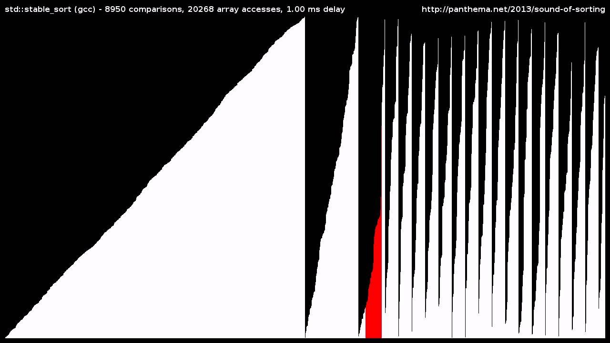

Sorting Algorithms
Overview

As early as computation's infancy, finding the fastest way to sort a list of unordered values has been a heavily discussed topics amongst computer scientists. One of the most rudimentary sorting algorithms - Bubble Sort - had even been analyzed as early as 1956.
There are now numerous different algorithms used to order a list of elements, and studying these functions is crucial for working with large amounts of data. Not every sorting algorithm is made equal, however, and there are many different ways to judge a sorting algorithm's efficiency and usefulness. Time complexity, memory usage, and stability are often used to examine various policies.
For a visualization on various Sorting Algorithms, check out the attached YouTube video. (Warning: Flashing Images.)
Before diving into how to set up sorting functions, first learn how these algorithms are judged by learning about computational complexity.
Learn About Complexity Notation